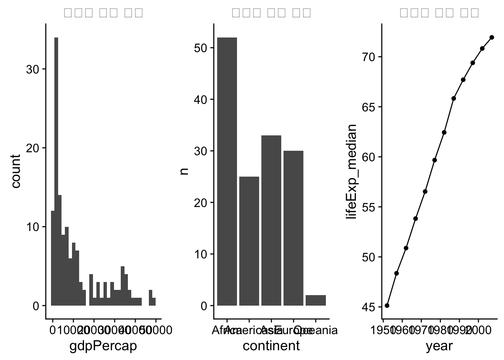
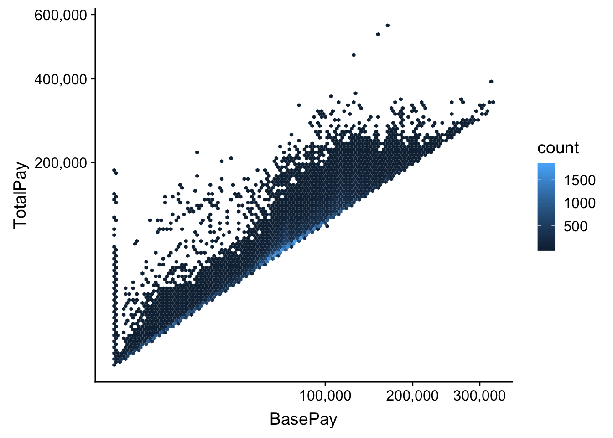
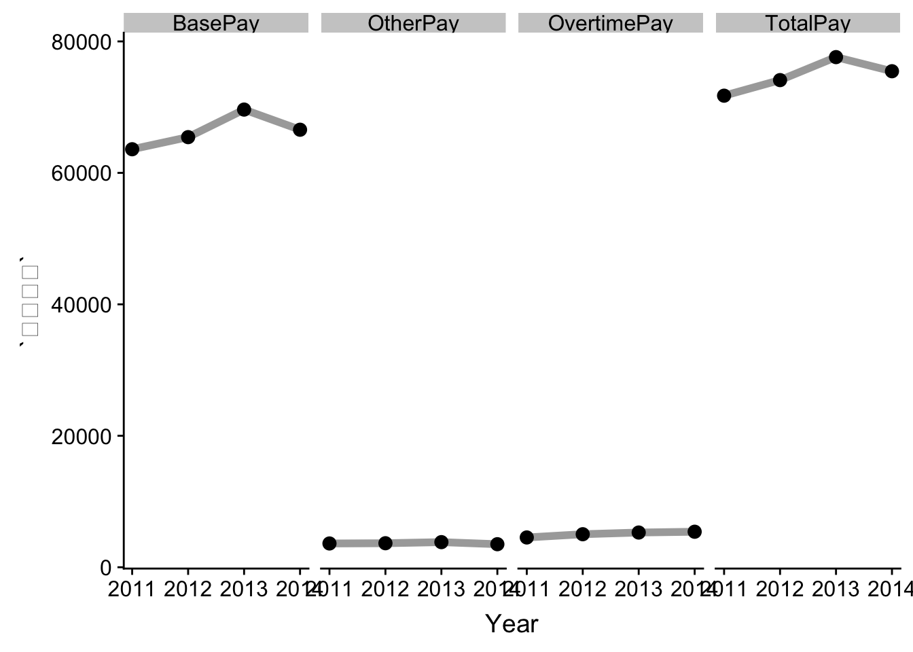
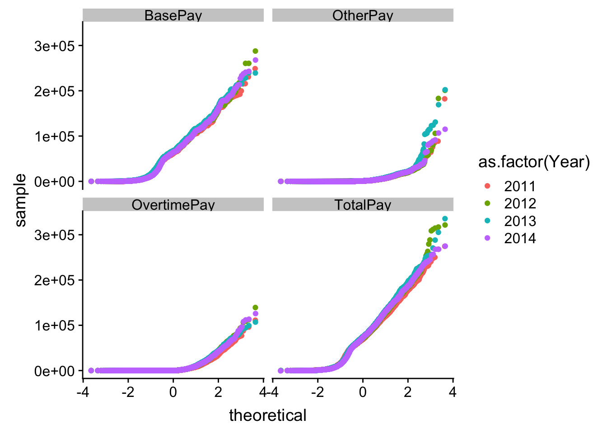
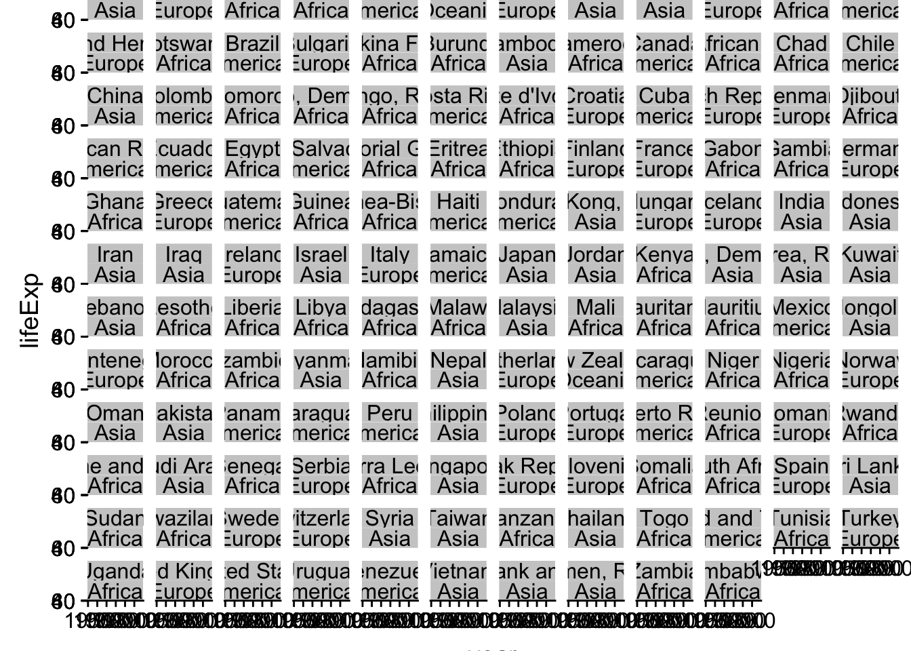

trelliscope빅데이터를 압축하는 방식은 데이터 자료형에 따라 다음과 같이 나눌 수 있다.
group_by() + summarize()로 시간대별 요약library(tidyverse)
library(gapminder)
library(cowplot)
library(scales)
gapminder_df <- gapminder %>%
filter(year == max(year))
continous_g <- gapminder_df %>%
ggplot(aes(x=gdpPercap)) +
geom_histogram() +
labs(title = "연속형 변수 요약")
discrete_g <- gapminder_df %>%
count(continent) %>%
ggplot(aes(x=continent, y=n)) +
geom_col() +
labs(title = "범주형 변수 요약")
time_series_g <- gapminder %>%
group_by(year) %>%
summarise(lifeExp_median = median(lifeExp)) %>%
ggplot(aes(x=year, y=lifeExp_median)) +
geom_line() +
geom_point() +
labs(title = "시계열 변수 요약")
plot_grid(continous_g, discrete_g, time_series_g, nrow=1)
캐글 - SF Salaries, Explore San Francisco city employee salary data 데이터를 다운로드 받아 빅데이터 시각화를 위한 예제 데이터로 사용한다.
동일한 데이터를 압축없이 산점도로 찍데 되면 시각화에 시간이 많이 소요된다. 하지만 geom_hex()를 사용하면 데이터가 압축되어 요약되기 때문에 시각화에 걸리는 시간도 많이 줄일 수 있다.
sf_df <- read_csv("data/Salaries.csv")
scatterplot_g <- sf_df %>%
ggplot(aes(x=BasePay, y=TotalPay)) +
geom_point(alpha=0.1) +
scale_x_sqrt(labels = scales::comma) +
scale_y_sqrt(labels = scales::comma)
hex_g <- sf_df %>%
ggplot(aes(x=BasePay, y=TotalPay)) +
geom_hex(bins=100) +
scale_x_sqrt(labels = scales::comma) +
scale_y_sqrt(labels = scales::comma)
hex_g
facet기초 통계량 분석을 위해서 데이터를 정제하고 이를 group_by() + summarize()로 요약을 한 후에 ggplot2 팩키지 facet 기능을 활용하여 간결하게 요약한다.
sf_tidy_df <- sf_df %>%
select(-Agency, -Notes, -Status, -Benefits, -TotalPayBenefits, -JobTitle, -Id) %>%
gather(`항목`, `금액`, -Year, -EmployeeName)
sf_salary_summary_df <- sf_tidy_df %>%
group_by(Year, `항목`) %>%
summarise(`평균연봉` = mean(`금액`, na.rm = TRUE))
sf_salary_summary_df %>%
ggplot(aes(x=Year, y=`평균연봉`)) +
geom_line(size=2, color="darkgray") +
geom_point(size=3, color="black") +
facet_wrap(~ `항목`, nrow=1)
QQ-plot연도별로 SF지역 연봉변화를 QQ-plot을 통해 확인하는 것도 연도별 차이를 식별하는 시각화 방법이 된다.
sf_tidy_df %>%
sample_frac(0.1) %>%
ggplot(aes(sample=`금액`, color= as.factor(Year))) +
geom_qq() +
facet_wrap(~`항목`)
facet → trelliscopeJSfacet은 빅데이터를 요약하여 시각화하는데 권장되는 방식이지만, 그룹을 쪼갤 집단이 많아지는 경우 facet창이 너무 작아 유용하지 않게 된다. 이런 경우 trelliscopeJS가 훌륭한 대안이 된다.
facet 무엇이 문제인가?facet_wrap() 함수에 너무 많은 조합의 수가 발생될 경우 facet창이 너무나 적은 화면에 나눠서 표시가 되어 유용성이 급격히 떨어진다.
library(trelliscopejs)
gapminder %>%
ggplot(aes(x = year, y = lifeExp)) +
geom_line() +
facet_wrap( ~ country+continent) +
guides(color = FALSE)
trelliscopeJS를 향해서…ggplot2 문법에 맞춰 시각화 코드를 작성하고 facet_wrap() 대신에 facet_trelliscope()을 사용해서 시각화를 하게 되면 범주수에 관계없이 유연한 시각화 산출물 생성이 가능하게 된다.
ggplot(gapminder, aes(x = year, y = lifeExp)) +
geom_line() +
facet_trelliscope(~ country + continent,
name = "gapminder-hello-world",
path = "trelliscope_files",
nrow=3, ncol=4)trelliscopeJSas_plotly = TRUE로 설정하게 되면 plotly 기능을 사용해서 인터랙티브 기능도 추가시킬 수 있다.
ggplot(gapminder, aes(x = year, y = lifeExp)) +
geom_line() +
geom_point() +
facet_trelliscope(~ country + continent,
nrow=3, ncol=4,
name = "gapminder-plotly",
path = "trelliscope_files",
as_plotly = TRUE)trelliscopeJS인지(Cognostics)기능은 “Cognostics are univariate statistics (or metrics) for a subset of data”와 같이 정의된다. autocogs 기능도 auto_cog = TRUE을 넣어 즉시 사용 가능하다. Filter 메뉴에 autocogs 가 자동으로 생성되어 _bivar_correlation이 계산되어 이를 통해서 인사이트를 얻을 수 있게 된다.
ggplot(gapminder, aes(x = year, y = lifeExp)) +
geom_line() +
geom_point() +
geom_smooth(method = "lm") +
facet_trelliscope(~ country + continent,
nrow=3, ncol=4,
name = "gapminder-autocogs",
path = "trelliscope_files",
as_plotly = TRUE,
auto_cog = TRUE)